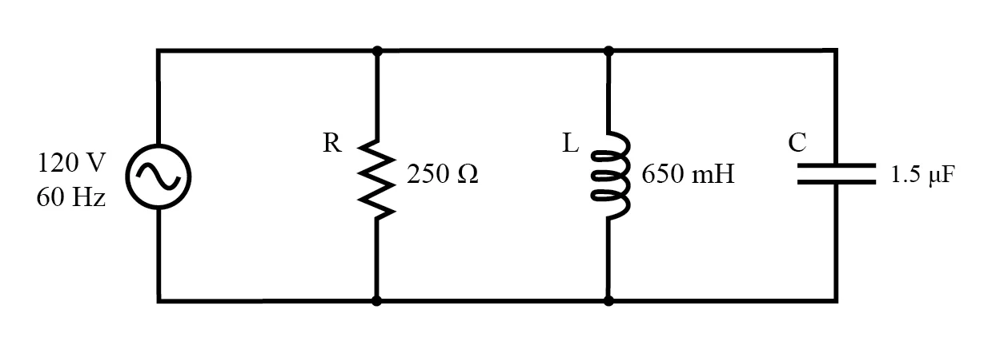
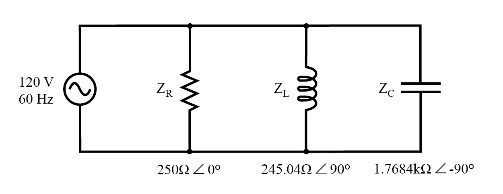
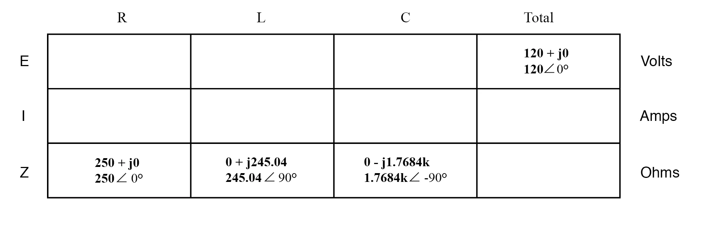
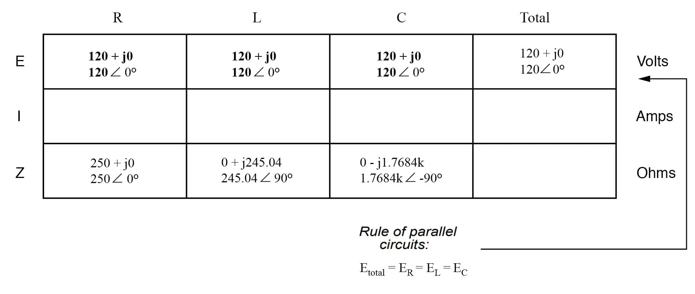
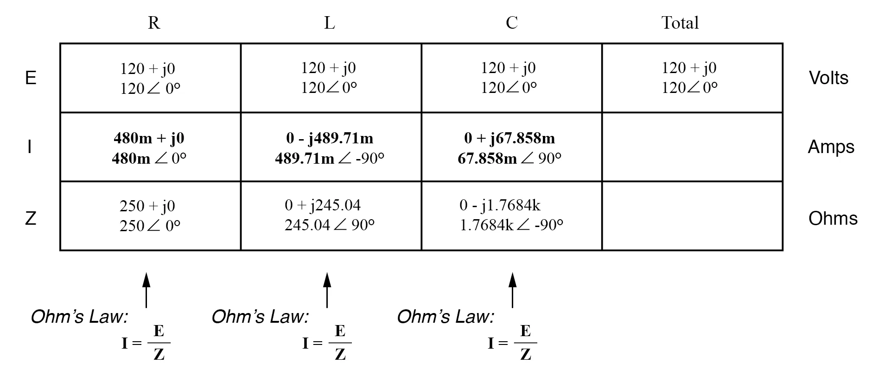
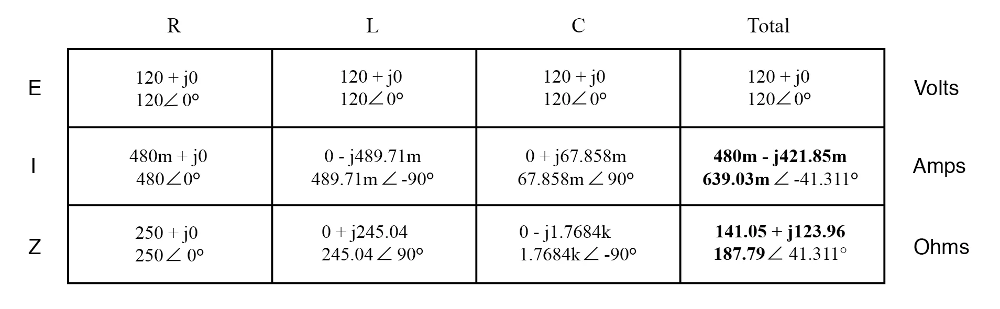
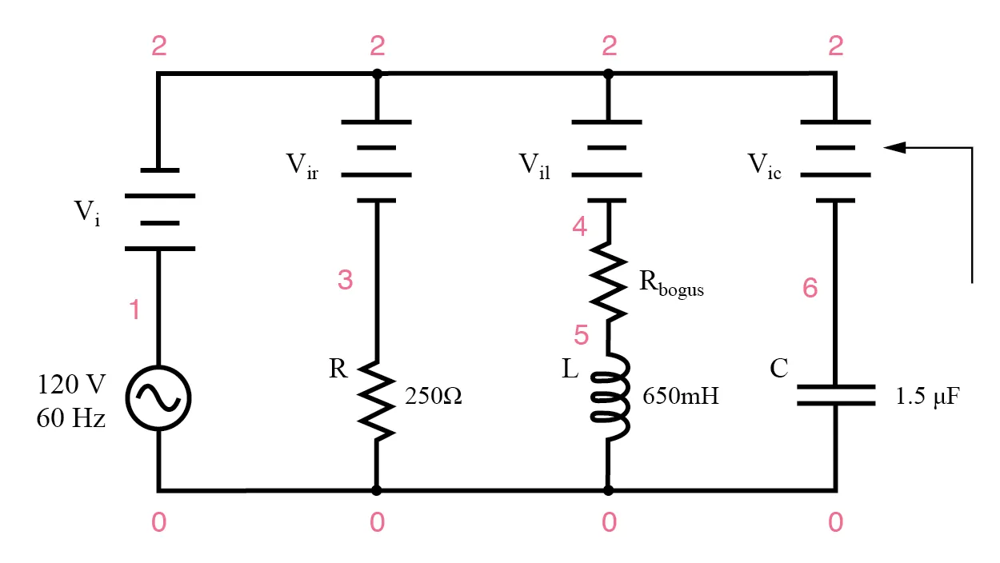
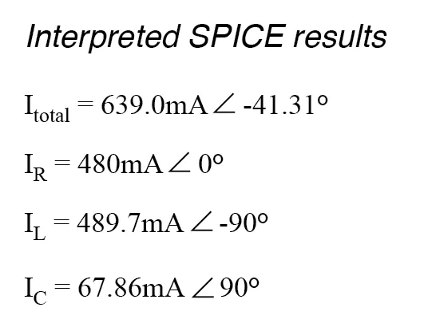

We can take the same components from the series circuit and rearrange them into a parallel configuration for an easy example circuit:

Example R, L, and C parallel circuit.
The fact that these components are connected in parallel instead of series now has absolutely no effect on their individual impedances. So long as the power supply is the same frequency as before, the inductive and capacitive reactances will not have changed at all.

Example R, L, and C parallel circuit with impedances replacing component values.
With all component values expressed as impedances (Z), we can set up an analysis table and proceed as in the last example problem, except this time following the rules of parallel circuits instead of series:

Knowing that voltage is shared equally by all components in a parallel circuit, we can transfer the figure for total voltage to all component columns in the table:

Now, we can apply Ohm’s Law (I=E/Z) vertically in each column to determine the current through each component:

There are two strategies for calculating the total current and total impedance. First, we could calculate total impedance from all the individual impedances in parallel (ZTotal = 1/(1/ZR + 1/ZL + 1/ZC), and then calculate total current by dividing source voltage by total impedance (I=E/Z).
However, working through the parallel impedance equation with complex numbers is no easy task, with all the reciprocations (1/Z).
This is especially true if you’re unfortunate enough not to have a calculator that handles complex numbers and are forced to do it all by hand (reciprocate the individual impedances in polar form, then convert them all to rectangular form for addition, then convert back to polar form for the final inversion, then invert).
The second way to calculate total current and total impedance is to add up all the branch currents to arrive at total current (total current in a parallel circuit—AC or DC—is equal to the sum of the branch currents), then use Ohm’s Law to determine total impedance from total voltage and total current (Z=E/I).

Either method, performed properly, will provide the correct answers. Let’s try analyzing this circuit with SPICE and see what happens.

Example parallel R, L, and C SPICE circuit. Battery symbols are “dummy” voltage sources for SPICE to use as current measurement points. All are set to 0 volts.
ac r-l-c circuit v1 1 0 ac 120 sin vi 1 2 ac 0 vir 2 3 ac 0 vil 2 4 ac 0 rbogus 4 5 1e-12 vic 2 6 ac 0 r1 3 0 250 l1 5 0 650m c1 6 0 1.5u .ac lin 1 60 60 .print ac i(vi) i(vir) i(vil) i(vic) .print ac ip(vi) ip(vir) ip(vil) ip(vic) .end
freq i(vi) i(vir) i(vil) i(vic) 6.000E+01 6.390E-01 4.800E-01 4.897E-01 6.786E-02 freq ip(vi) ip(vir) ip(vil) ip(vic) 6.000E+01 -4.131E+01 0.000E+00 -9.000E+01 9.000E+01
